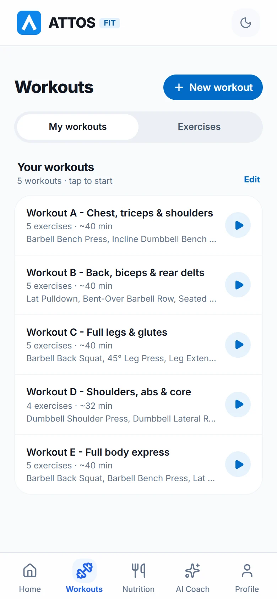
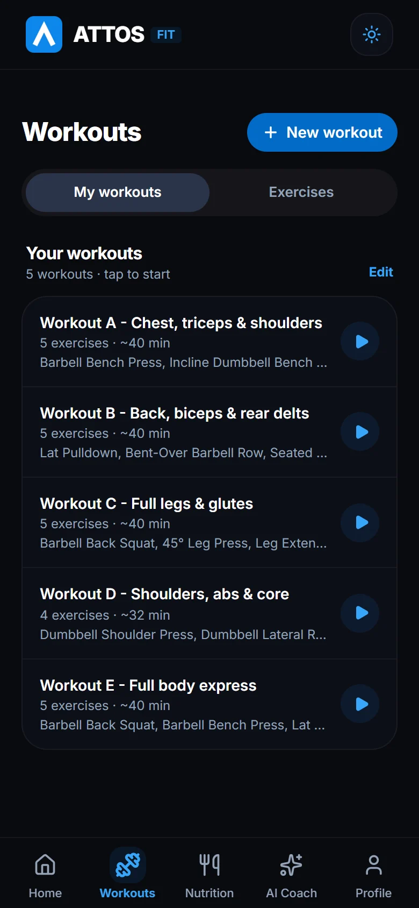
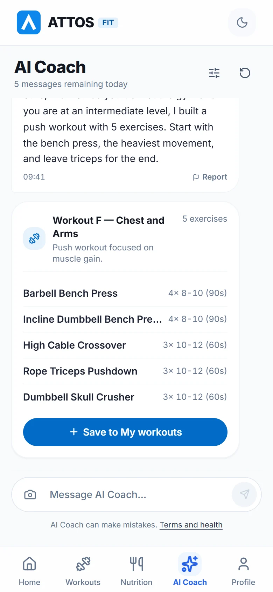
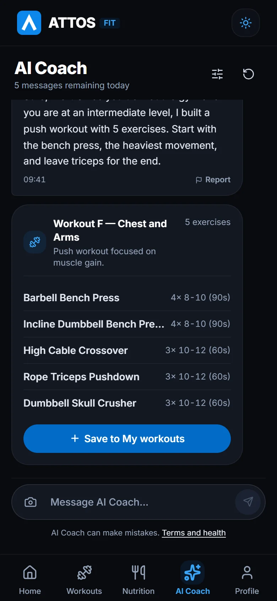
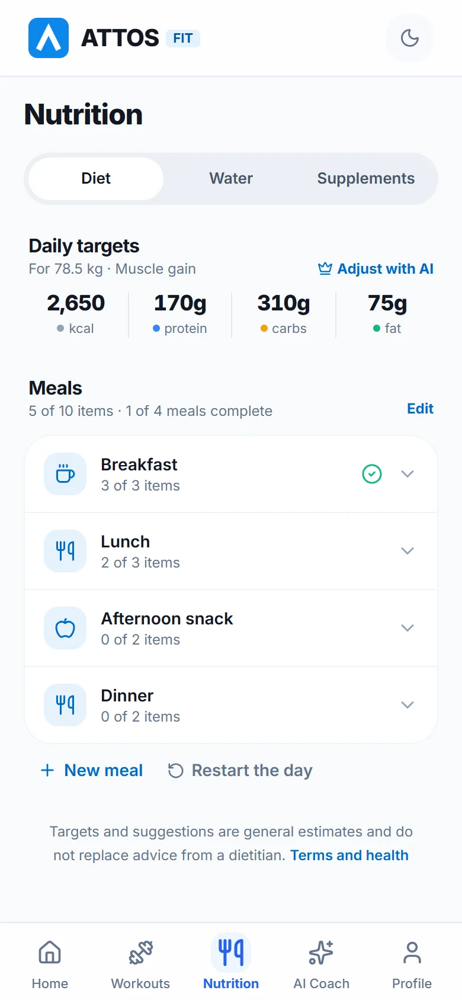
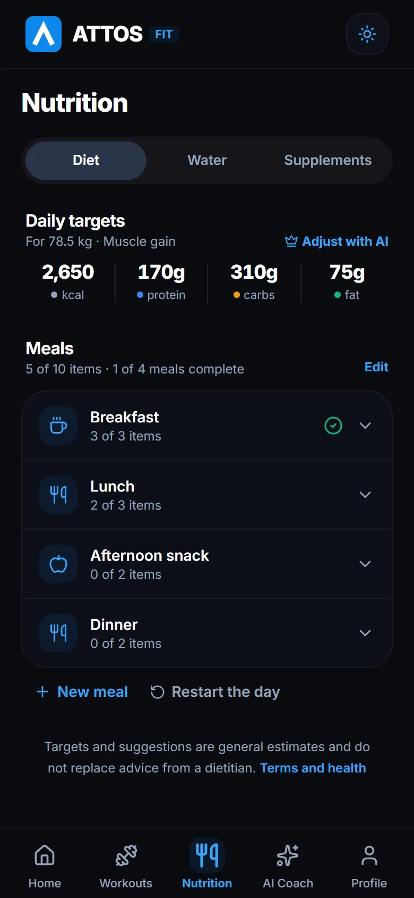
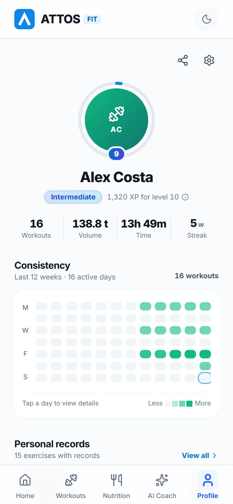
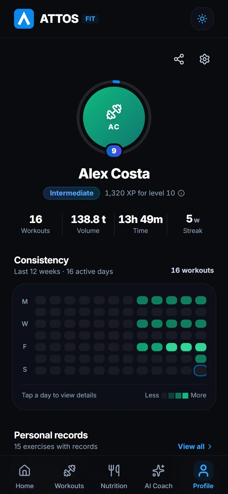

Your workout in your hand, from warm-up to PR.
Attos builds your workouts from six questions, logs every set at the gym and shows your progress. Logging workouts is free, forever.
Built for what happens inside the gym
A few taps per set, big numbers and nothing in your way between exercises.
Workouts ready on day one
Answer six questions and Attos gives you a training split tuned to your goal, your level and the place where you train.
- Routines for the gym, a building gym or home
- Create your own from scratch or edit the suggested ones
- 101 exercises with video and step-by-step form cues
- Risky exercises are left out when you report pain


Log every set with one tap
The workout screen shows what you did last time next to each set. Adjust the weight, check it off and move on.
- Weight and reps from your last session always in view
- Add sets and change the exercise order mid-workout
- Summary with duration, volume and records when you finish
- Cards ready to share
A coach that knows your profile
AI Coach answers training and nutrition questions with your goal, level and limitations in mind. It also builds workouts that land in the app with one tap.
- Ask for a workout in plain words and save it to My workouts
- Take a photo of your paper routine and let AI digitize it
- 5 messages a day on the free plan


Diet, water and supplements in one place
Daily calorie and macro targets, meals to check off through the day, a water goal based on your weight and your supplement list.
- Water goal recommended for your weight or set by you
- Reminders for water and for each supplement, at the times you choose
- Nudges when your day is falling behind
- Quiet hours so nothing bothers you at night


See your real progress
Profile brings together everything you have trained: consistency, records, muscle distribution, body weight and achievements.
- Personal records and estimated 1RM per exercise
- Body map of the muscles you train most
- Body weight trend and BMI
- Full history, set by set


The details that make a difference
The app adapts to your phone and your habits.
Light and dark theme
Attos follows your phone’s theme. If you prefer, lock it to light or dark in Settings.
Three languages
English, Portuguese and Spanish. The app opens in your device language and you can switch any time.
Reminders at your pace
Water and supplement alerts at the times you set, with quiet hours.
Cloud backup
Sign in with Google so you don’t lose your workouts when you switch phones. Without an account, everything stays on the device.
Share your workout
Cards for a workout or for your month in several styles, ready for your stories.
Your data is yours
We don’t sell data. You can delete your account and everything saved from inside the app, any time.
Free and Attos PRO
Logging workouts stays free forever. PRO unlocks unlimited AI Coach and an AI-adjusted diet.
| Feature | Free | PRO |
|---|---|---|
| Log workouts | ✓ | ✓ |
| Records, 1RM and progress | ✓ | ✓ |
| Cloud backup | ✓ | ✓ |
| AI Coach | 5 per day | unlimited |
| AI-adjusted diet | — | ✓ |
The monthly and yearly prices are shown in the app and come from Google Play. The subscription renews automatically and you can cancel it any time in Google Play.
Frequently asked questions
Is Attos free?
Yes. Creating workouts, logging sets, viewing history, records and achievements, and using cloud backup are free. The Attos PRO plan is optional and unlocks unlimited AI Coach messages and an AI-adjusted diet.
Do I need an account?
No. You can start without an account and your data stays on the device. Signing in with Google gives you cloud backup, so you can recover everything when you switch phones.
Does it work offline?
Logging workouts, water, diet and supplements works offline. AI Coach, cloud backup and the subscription need a connection.
Does AI Coach replace a trainer or a dietitian?
No. AI Coach is a support tool: it answers questions and suggests workouts based on your profile, but it can make mistakes. Always check its suggestions and see a qualified professional, especially if you have injuries or health conditions.
Can I use pounds instead of kilograms?
Yes. In Settings, under Training, switch the units between kg and lb.
How do I delete my account and my data?
In the app, go to Profile, tap the gear, scroll to the bottom and tap “Delete account and data”. If you already uninstalled the app, request deletion by email. The steps are on the Terms and privacy page.
Which devices does Attos run on?
Attos is currently available for Android, on Google Play.
Start your next workout with Attos
Six questions and your workouts are ready.